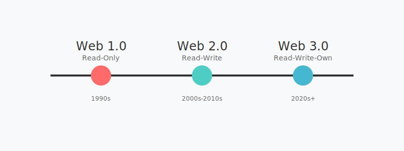

Crypto Terms
This Chapter will be updated most frequently. Terms are constantly changing, definitions being debated in the public square and evolving at a quicksilver pace.
Please treat it as a living document. The Almanack uses version control, so it will be possible to see how terms change over time by going back to previous versions.
Core Concepts
Web3
While our industry is built on the back bone of cryptography, it encompasses not only a branch of mathematics, but economic, social, technological and political aspects. Web3 more closely aligns with the breadth of our industry.
Below you can see how the web has evolved into Web3.

- Web1 (1990s): static websites, read-only content
- Web2 (2000s - 2010s): Interactive social platforms, user-generated content
- Web3 (2020s+): Decentralized networks, blockchain, user-owned data and assets
Decentralization

Blockchains
Layer 1
Currently there is no formally and universally accepted definition of what comprises a L1 Network.
We have taken these sources in order to come up with our definition:
- (Nakamoto 2008) for Bitcoin
- (Buterin 2013) for Ethereum
- (Buterin 2021) for the rollups guide
- (Charbonneau 2023) for John’s excellent guide to rollups
Nakamoto’s Bitcoin whitepaper, while not explicitly using the term “Layer 1,” established the core principles of what we now recognize as Layer 1 characteristics: a base protocol that handles consensus, security, and data availability without relying on any other blockchain system. This introduced the concept of a self-contained, sovereign blockchain network.
The Ethereum whitepaper expanded this foundation by introducing programmability and demonstrating that a Layer 1 could be more than just a payment system. It showed that a Layer 1 blockchain serves as a foundation for broader computational capabilities while maintaining the core properties of decentralization and security.
Buterin’s rollup guide helps define Layer 1 by contrast - it clarifies what makes a base layer distinct from scaling solutions built on top of it. This work emphasizes that a Layer 1 blockchain must handle three critical functions: data availability, consensus, and execution, all while maintaining decentralization.
Charbonneau’s report further refines our understanding by examining how Layer 1 blockchains interact with scaling solutions, highlighting their role as the security and settlement layer of the blockchain ecosystem.
Synthesizing these sources, we can define a Layer 1 blockchain as:
A sovereign blockchain network that provides three fundamental guarantees without relying on any other blockchain system:
- consensus - the ability to agree on the state of the network
- data availability - ensuring all transaction data is publicly accessible and verifiable
- execution - the processing of transactions and state changes. It must do this while maintaining decentralization in its security model and serving as the ultimate settlement layer where the final state of all transactions is recorded.
Settlement Layer
This is kinda a meme at this point and no formal definition exists. Although lots of opinions, as is generally the case in crypto.
Layer 2
There is no canonical definition of L2’s.
We use:
To come up with the following Framework
- Data Availability
- On-chain (Rollups)
- Off-chain (Validiums, Plasma, Sidechains)
- Security Model
- Inherited from L1 (Rollups, Validiums)
- Independent (Sidechains)
- Hybrid (Plasma)
- State Validation
- Fraud Proofs (Optimistic Rollups)
- Validity Proofs (ZK Rollups, Validiums)
- Independent (Sidechains)
- Merkle Roots (Plasma)
- Settlement Mechanism
- Direct (Rollups)
- Challenge Period (Optimistic Rollups)
- Exit Games (Plasma)
- Bridge/Peg (Sidechains)
Accounts
While technically different blockchains will have their own nuances and their own technically correct terms for the concept of an “account”, we will refer to them all as accounts for ease of reference.
Seed phrases
In order to create an Account on a blockchain, it needs to be secured by a public-private key pair. The most common way to do is via a Seed phrase generated by the wallet.
Since your private key is the singular point of security for your interaction on that blockchain, it needs to be incredibly secure. This means that your private key is a very large random number. Due to the difficulty of working with these large random numbers, Seed phrases were created to improve the user experience. Historically humans have used “code words” to obfuscate and hide meaning. Seed phrases are just a way to generate a private key in a more human relatable way.
Externally Owned Accounts
The formal definition of an EOA comes from Ethereum’s Yellow Paper. (Wood 2014)
There it is defined as:
- A nonce (counter for transactions sent)
- A balance (in the native currency)
- No associated contract code
- No data storage
However we live in a multi-chain world so we’ll define our own interpretation as:
- Direct control through a public-private key pair
- No additional programmable logic at the account level
- Transactions must be directly signed by the controlling private key
DeFi - Dentralized Finance
- Slippage
Colloqualisms
Degens
“Degen” (short for “degenerate”) in crypto/Web3 culture refers to aggressive or risk-seeking participants in cryptocurrency markets and DeFi (decentralized finance) protocols. The term originated from gambling culture but has been embraced by the crypto community as a semi-ironic badge of honor.
- Trading Behavior: Degens are known for taking high-risk positions, often using significant leverage, and engaging in yield farming, liquidity mining, and other complex DeFi strategies.
- Cultural Identity: Unlike traditional finance’s negative connotation of “degenerate gambling,” the crypto community has reclaimed “degen” as a positive or playful identifier. It represents a willingness to experiment with new protocols and take calculated risks.
- Technical Sophistication: Despite the seeming recklessness implied by the term, many “degens” are highly knowledgeable about blockchain technology, smart contracts, and DeFi mechanics. They’re often early adopters of new protocols and technologies.
- Community Role: Degens play an important role in crypto ecosystems by providing early liquidity to new protocols, testing experimental features, and contributing to the rapid evolution of DeFi products.
General Terms
- Smol Brain
- Big Brain
- Gigabrain
- FUD (Fear, Uncertainty, Doubt): While not strictly a meme, it’s become memefied in crypto culture. Any negative news or criticism is often dismissed as “FUD” by cryptocurrency enthusiasts, sometimes ironically.
- “When Lambo?”: This phrase emerged during the 2017 bull run, representing the dream of getting rich enough from crypto to buy a Lamborghini. It’s both used seriously by newcomers and ironically by veterans.
- Diamond Hands / Paper Hands: Popularized during the GameStop saga but heavily adopted in crypto. “Diamond hands” refers to holders who don’t sell despite market pressure, while “paper hands” sell at the first sign of trouble.
- “This is good for Bitcoin”: Originally used seriously, it became ironic as people would claim any news, even negative, was somehow positive for Bitcoin’s adoption or price.
- Bogdanoff Twins (“Dump It”): These memes feature the late Bogdanoff twins supposedly controlling the crypto markets, ordering price dumps right after someone buys or pumps after they sell.
- “Funds are SAFU”: From a Binance CEO video where he mispronounced “safe,” this became a way to reassure (often ironically) about exchange security.
Common Characters

- Wojak/NPC: Originally from 4chan, this simple face drawing represents the average retail trader who buys high and sells low. It’s often paired with the “feels guy” emotion variations, particularly during market crashes.
- Soyjak: a derogatory variation of Wojak used to mock people perceived as overly enthusiastic, naive, or conformist. The term combines “soy” (from the controversial and scientifically unsupported claim that soy consumption reduces masculinity) with “Wojak.”
- Coomer: a derogatory variation of Wojak used to mock people perceived as overly enthusiastic, naive, or conformist. The term combines “soy” (from the controversial and scientifically unsupported claim that soy consumption reduces masculinity) with “Wojak.”
Acronyms
IBRL - Increase Bandwidth, Reduce Latency